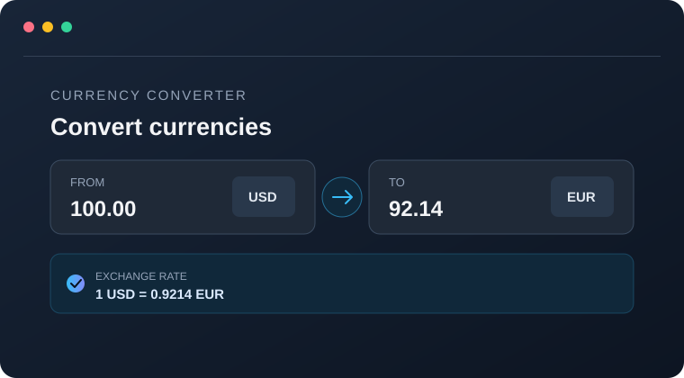
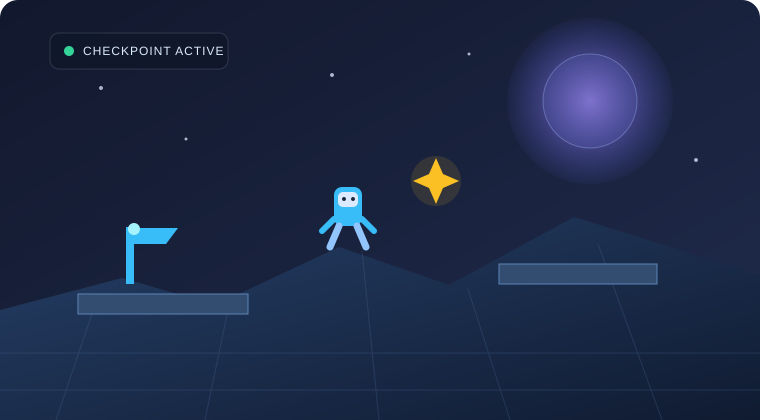
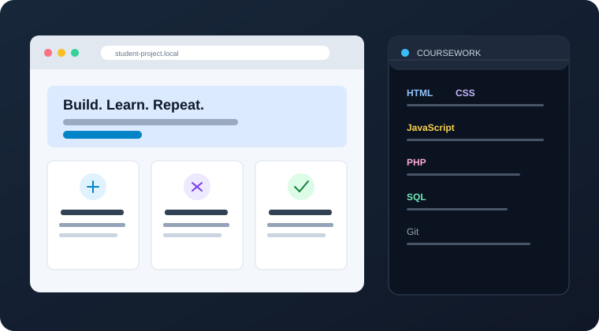

01Python · Data storage
Python Currency Converter
A Python application that retrieves currency exchange rates, converts between currencies, and stores rate information in an SQLite database.
Selected work
From a Python currency converter to a Unity game and web development coursework, these projects reflect the tools and concepts I’m exploring as a Software Engineering student.

01Python · Data storage
A Python application that retrieves currency exchange rates, converts between currencies, and stores rate information in an SQLite database.

02C# · Game development
A 3D game featuring player movement, jumping, dashing, collectible items, checkpoints, obstacles, and a win condition.

03IT 202 · Coursework
A collection of coursework involving HTML pages, CSS styling, JavaScript validation and interactions, PHP exercises, and database queries.
More project links and screenshots can be added as they’re ready.
Get in touch